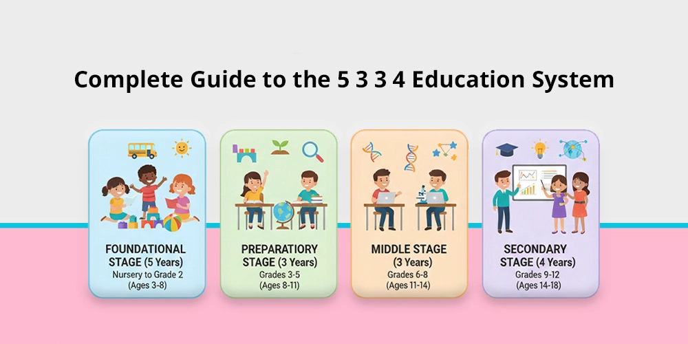
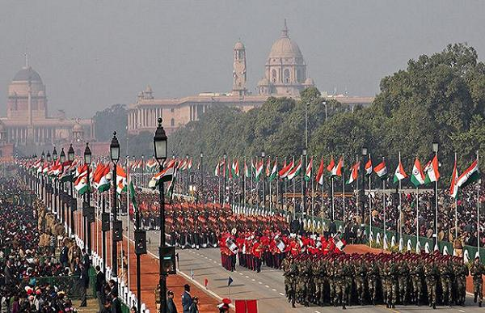

The Spices! Chapter 0 - taken by Alan Gabriel Hernando
Indian subcontinent — mainly India itself.

Why Europeans came:
- Europeans don't have spices so bland food
- spread christianity

“There's a reason why there are too many Asian restaurants all over the world.” (There's a few Europeans restaurant though)

Colonization of India (1505–1757)Chapter 1 - taken by Alan Gabriel Hernando
1505 – 1757
1505‑1757: Mughals = powerful (27% economy), British = small traders. Mughals collapse → British step in.

European colonization in India began with the Portuguese.

Several empires set up trading posts, but only the British, French, and Portuguese survived into the 20th century.

The British East India Company, initially a trading entity, established small coastal forts.

At that time, the powerful Mughal Empire ruled most of India, controlling 27% of the world economy—equal to all of China or Western Europe combined. Direct European conquest was impossible because the Mughals had strong shipbuilding, textile, and trade networks.

However, in the early 18th century, Invasions from Persia and Afghanistan caused external strains on the state. At the same time, the regions within the Empire began demanding more autonomy. England happened to be withing the region it was first breaking away

Subjugation of India (1757–1858)Chapter 2 - taken by Agustina Zoe Sabalza
1757 – 1858
1757‑1858: Unequal treaties → Company controls treasury → Destroys Indian industry (27% → 2%) → 1857 Rebellion fails → Crown takes over.
The East India Company saw the fall of the Mughal Empire as an opportunity. As regions fought succession wars, the British supported one claimant with superior artillery and warships. Once their side won, they placed a company official in charge of that state's treasury, controlling tax collection and government spending, with a large portion sent to London shareholders.

If rulers disagreed, the British threatened bombardment. Through these "unequal treaties," they gained control of Bengal, Bihar, and Orissa's finances by 1765.

British government officials were also company shareholders, so they passed legislation to strengthen the company.

They invested taxes into hiring Indian mercenaries and training Indian soldiers, expanding their conquests.

Some land was directly ruled, while princely states remained under Indian princes who paid tribute. (Those states pay the company so they still rule in those lands btw...)

Over time, taxes increased, land was confiscated, and regions became opium farms for trade with China.

The British destroyed Indian industries (steel, shipbuilding, textiles) by taxing Indian goods heavily while exempting British imports, making British products cheaper. India's share of world GDP fell from 27% to 2%. British industry grew fast with over 100 million Indian customers and no competition.

A British administrator admitted they taxed Indians to the utmost.
Resentment grew. The 1857 Indian Rebellion resulted in over 800,000 Indian deaths.

The British government then took direct control, but paid the East India Company for the right to rule—essentially a self-dealing arrangement since many MPs were shareholders.

The British Raj (1858–1914)Chapter 3 - taken by Alan Gabriel Hernando
1858 – 1914
1858‑1914: British Raj = 0.5% population ruling 200M → Divide Hindus/Muslims to prevent unity → Extract wealth, ignore development.
The Crown took over governance but kept the company's exploitative systems. The biggest problem was governing over 200 million people with only 6,000 officials and 70,000 European soldiers, plus 230,000 Indian troops paid by Indian taxes. The British never exceeded 0.5% of the population, so they feared unity.

To prevent that, they stoked Hindu‑Muslim hatred by segregating communities, creating land and food shortages to force competition, and restructuring politics along religious lines.

They made Muslims appear a threat by making them half of the army though only 20% of the population.

Simultaneously, they promoted the idea that India was historically Hindu and Muslims were foreign invaders—even though the British were the real invaders.

- They denied Indians promotions.
- They paid them less.
- They Placed them under less competent British superiors.

Some Indians were anglicised through British education and joined the Indian Civil Service, which was 96% British.

That service was poorly run:
- Officials had too many tasks.
- They were evaluated only on tax collection.
- They ignored famine prevention or development.

British officials in India were paid more than those in England and lived isolated from Indian society, never considering India their home.

The Indian National Congress (1885–1914)Chapter 4 - taken by Agustina Zoe Sabalza
1885 – 1914
1885‑1914: INC formed → British ignore them → Boycotts begin.
Small rebellions failed. So Indian elites founded the Indian National Congress (INC) in 1885 to advocate for Indian rights(They didn't advocate for independence yet)

They published 22 newspapers (India had 475 Indian‑owned by 1875) to expose corruption and foster unity.

They appealed for:
- Democracy
- Legislation protecting rights
- representation

But the British ignored them, evaluating officials only on revenue. Free speech was officially practiced but suppressed: newspapers were shut down, editors prosecuted.

After two decades of failure, frustrated nationalists realised that talking was useless. They concluded that if the British only cared about money.

They should make it hard to earn in India. They began boycotting British shops and directing customers to Indian ones. This peaceful protest worked, hurting British profits and getting attention for the first time.

The Non‑Violence Movement (1915–1919)Chapter 5 - taken by Salinas Sandra Mercedes
1915 – 1919
1915‑1919: Gandhi returns → WWI (1M soldiers fight) → British promise home rule → Lie.
Once upon a time there was this guy called Mahatma Gandhi. He was an indian lawyer.

he had used non‑violent resistance in South Africa(and he succeded) and returned to India in 1915.

He joined the INC and broadened its appeal beyond elites to ordinary Indians

he broadened its appeal by using speeches and sending news articles to Britain to expose atrocities.

During WWI (1914‑1918), over 1 million Indians served, and the British promised home rule (like Australia or Canada) in exchange.

But after the war, with 84,000 Indian dead and a famine killing millions, the British broke their promise. This caused massive resentment.

Millons of Indians were protesting so it was more than what the Brittish could handle

The Shadow of Amritsar (1919–1922)Chapter 6 - taken by Agustina Zoe Sabalza
1919 – 1922
1919‑1922: Amritsar Massacre (1,500 dead) → INC demands full independence → Non‑Cooperation Movement → Gandhi calls it off after Chauri Chaura.
On April 9, 1919, the British arrested 2 nationalist leaders in Amritsar.

Protests escalated into riots with 15 deaths.

General Dyer arrived, banned gatherings of more than three people.

On April 13, 10,000‑15,000 people gathered for a spring festival, unaware of the ban.

Dyer ordered his troops to fire into the crowd, using 1,650 rounds, killing up to 1,500 civilians (Jallianwala Bagh massacre).

Dyer was forced to resign but received £1.6 million in donations, while victims' families got about £1,800 each.

This massacre became a rallying cry. Indians questioned British rule, the INC gained support, and the demand shifted from home rule to full independence.

In 1920, the INC launched the Non‑Cooperation Movement:
- Indians refused to work
- Indians broke unjust laws
- Indians used passive resistance (lying, giving wrong directions, deliberately wasting time)

The British arrested almost all INC leaders except Gandhi, expecting the movement to collapse. But protests continued

However, in 1922, a violent incident in Chauri Chaura where a police station was burned down shocked Gandhi.

He felt India was not ready for non‑violent independence and called off the movement, focusing on preparation instead.

A New Beginning (1922–1945)Chapter 7 - taken by Alan Gabriel Hernando
1922 – 1945
1922‑1945: Salt March (1930) → 1935 limited self‑rule → WWII → Quit India Movement (1942, crushed) → British boost Muslim League.
The INC returned to seeking dominion status. They demonstrated economic damage through non‑cooperation. One famous protest was the 1930 Salt March: Gandhi walked 390 km to the coast to make illegal salt, breaking the British monopoly. Hundreds of thousands joined, making salt and buying/selling it, again making British control unworkable.

These protests forced the British to grant limited self‑governance in 1935 for about 10% of the population.

However, the British held elections with separate Hindu and Muslim electorates to prevent cooperation, favouring the Muslim League.

Though both groups resisted, division deepened.

The Muslim League began questioning whether Muslims should be a minority in a united India or have their own country (Pakistan).

In 1937, the INC won most seats, but real power remained with the British(feared the popularity and was told by lond to undermine the organization)

In 1939, WWII broke out. Britain brought India into the war without consulting Indian leaders. The INC was willing to support the war if home rule was granted, but the British refused.

The INC launched the Quit India Movement in 1942, demanding independence or withdrawal from the war.

The British brutally suppressed it, shut newspapers, and arrested the entire INC leadership.

The British then strengthened the Muslim League, giving it government positions and freedoms, hoping it would cause Hindu‑Muslim conflict.

The League grew from 112,000 members in 1941 to over 2 million by 1944.

Instead of fighting Hindus, the League advocated for an independent Pakistan.

India and Pakistan (1945–1947)Chapter 8 - taken by Agustina Zoe Sabalza
1945 – 1947
1945‑1947: Elections split religiously → Pakistan demanded → British set deadline → Partition happens (14‑18M refugees, 1M dead) → Aug 15, 1947 independence.
After WWII, the British released INC leaders and held elections.

The League won most Muslim votes, strengthening the Pakistan demand.

Communal violence escalated. The British wanted to discredit the INC but now faced pressure from the US, USSR, China, and Afghanistan, and could not maintain order while recovering from war.

They decided to leave, believing India would collapse into civil war, after which they could return.

In February 1946, they began negotiations to hand over power. The INC and Muslim League could not agree on a united India.

The British set a deadline of June 1948, forcing a partition plan: Pakistan for Muslim‑majority provinces, India for the rest.

However, this left huge Hindu minorities in Pakistan and Muslim minorities in India, causing 14‑18 million people to move and up to 1 million deaths.

The regions of Punjab and Bengal, with mixed populations, were partitioned as well.

The 565 princely states were given the option to join either country, but the British also suggested they could become independent, which horrified everyone.

Most princes chose to join India or Pakistan

Although four (Hyderabad, Kashmir, Bhopal, Travancore) resisted and were eventually strong‑armed into joining.

Kashmir remains disputed between India, Pakistan, and China.

As violence grew, the British moved independence forward of India to August 15, 1947.

Both nations became secular states, and the Commonwealth of Nations was created to maintain diplomatic and trade ties.

Indian Education – Pre-British & Colonial ErasChapter 9 - taken by Silvina Vilavivencio
Education before British Rule
Education was traditional, rooted in culture, religion, and community life. Gurukuls, village pathshalas, and Muslim madrasas/maktabs were common. They taught Sanskrit, mathematics, astronomy, philosophy, medicine, arts, ethics, and good conduct; learning was oral, through listening, memorization, and practice, using local languages. Famous great learning centers like Nalanda and Takshashila attracted students from faraway lands. Many village children had access, though there were limits for girls and some social groups.

Education under British Rule
A major shift came with Macaulay's Minute and the English Education Act of 1835: English became the main language of instruction, European science, literature, and history replaced much native learning, and Sanskrit and regional knowledge were neglected. Wood's Dispatch (1854) built a structured system, set up Education Departments, and opened Calcutta, Bombay, and Madras Universities in 1857.
The main aim was creating an English-speaking class to work as clerks and administrators for the colonial government. Missionary and government schools spread slowly, mostly in towns; later Indians opened their own schools to preserve culture, and these ideas helped grow the movement for India's independence.
“We must at present do our best to form a class who may be interpreters between us and the millions whom we govern — a class of persons Indian in blood and colour, but English in taste, in opinions, in morals, and in intellect.” — Thomas Babington Macaulay, Minute on Education (1835)

The Mosaic of Faith, Culture, and TraditionChapter 10 - taken by Salina Sandra Mercedes
India is one of the most culturally complex and fascinating ecosystems on the planet. With a millennia-old history, the Indian subcontinent has not only given birth to some of the world's most influential religions, but it has also woven spirituality directly into the civic fabric, unwritten laws, and daily habits of its population. From an educational and pedagogical perspective, analysing India offers future English teachers an invaluable tool to foster critical intercultural competence and understand global diversity.

The Religious Landscape: Social and Identity Impact
- Hinduism: Practiced by nearly 80% of the population, it functions as an all-encompassing philosophy rather than a rigid, dogmatic institution. Core concepts such as dharma (cosmic duty) and karma (the universal law of cause and effect) govern ethical choices and daily behavior.
- Islam: Representing approximately 14% of the population, India is home to one of the largest Muslim communities globally. This presence has profoundly enriched the architectural, artistic, and linguistic heritage of the nation.
- Native Dharmic Religions and Minorities: The land is the birthplace of Buddhism, Jainism, and Sikhism, and hosts vibrant Christian and Parsi communities, demonstrating centuries of constant cultural syncretism.

Ancestral Customs and Sacred Symbols
- Animal Veneration: The protection of the cow is a powerful symbol of motherhood, non-violence (ahimsa), and the earth. Their free transit through hyper-modern metropolises visually illustrates the coexistence of economic progress and ancient sacred traditions.
- The Ganges River: Revered as the living goddess Ganga, millions of devotees gather annually at its banks in cities like Varanasi. The ritual baths and funerary practices performed there show an anthropological perspective where life, death, and purification interact naturally.

Major Festivals
Celebrations structurally organise social life. Diwali (the festival of lights) celebrates the spiritual victory of light over darkness, while Holi (the festival of colors) welcomes spring, temporarily dissolving rigid social barriers and caste structures through shared joy.

Arranged Marriages in IndiaChapter 11 - taken by Salinas Sandra Mereles
Despite global modernization, this institution maintains overwhelming support, being the preference of 85% of the population over love marriages.

1. Selection Criteria and Filters
The process is inherently pragmatic. It is based on filters designed to ensure cultural compatibility and long-term viability between families:
- Sociocultural Homogeneity: Religion and caste are non-negotiable primary filters to preserve heritage and customs. Additionally, the morality, educational level, and degree of conservatism of the families are evaluated.
- Astrology (Horoscope): Functions as an indispensable technical requirement. Vedic astrology (Guna Milap) is used to measure compatibility (requiring at least 18 out of 36 "gunas") and detect potential astrological obstacles like Mangalik Dosha.
- Gender Asymmetry in Evaluation: The scrutiny is markedly differentiated by gender. The man is evaluated almost exclusively on his professional status and ability to provide economic stability. The woman is judged primarily on her physical appearance (with a documented preference for fair skin) and her efficiency in domestic chores.

2. Approval Protocol
The scrutiny subordinates individuality to family validation. After passing the astrological filter, the groom's family conducts an in-person inspection of the candidate. If both parties determine that the union is strategic and beneficial, the agreement is formalized through an engagement, setting the wedding date guided by astrological calendars.

3. Modernization of the Process
Methods have evolved while the essence remains. Traditional matchmaking has been complemented by digital platforms and matchmaking software. In urban areas, criteria have adapted:
- Women's professional profiles are valued.
- Courtship periods are allowed prior to marriage to mitigate initial friction.
- Medical tests are required.
- Opposition to practices like dowry and child marriage is increasing.

4. Success Rate and Sociological Basis
The model sustains its efficacy on a statistically minimal divorce rate (1 in 100). This long-term retention is attributed to arranged marriages being configured as a contract based on duty, mutual commitment, and family alignment rather than fleeting romantic passion.
“Arranged marriages in India are not just unions of two individuals, but of two families, built on shared values and social harmony.” (Cultural Anthropologist, 2020)

Organisation in Modern Education in IndiaChapter 12 - taken by Silvina Vilavicencio
Levels & Grade Organisation
Official 5+3+3+4 structure:
- Foundational: preschool + Classes 1–2 (ages 3–8)
- Preparatory: Classes 3, 4, 5 (ages 8–11)
- Middle: Classes 6, 7, 8 (ages 11–14)
- Secondary: Classes 9–10; Senior Secondary: Classes 11–12 (ages 14–18)
- Higher Education: vocational colleges then university
Degrees & Certificates earned
- End Class 10: Secondary School Certificate
- End Class 12: Higher Secondary / Senior Secondary Certificate
- Further: Vocational Diploma, Bachelor's Degree, Master's Degree, Doctorate

Recess & Holidays
- Daily recess/lunch break: time to rest, eat, play, socialize, and play sports together.
- School Holidays:
- Long Summer Vacation: May–June, about 5–6 weeks
- Short Winter Break: late December–early January
- Festive holidays: Diwali, Holi, Eid, Independence Day, Christmas; Sundays always off.

What happens if caught cheating
Strictly forbidden and punished seriously: exam paper cancelled, sometimes all subject results invalidated, must repeat full academic year, suspension. Serious cases face official penalties under anti-cheating laws. Marks become zero, certificate invalid, it delays moving up class or entering university.
“Academic integrity is the foundation of India's education system — cheating is not tolerated at any level.” (University Grants Commission, India)

Different type schools in IndiaChapter 13 - taken by Silvina Vilavicencio
🏫 Government Public Schools of India
They are free of charge, accessible to everyone, follow the national CBSE or state curriculum, use simple uniforms, and provide classes in both rural and urban areas:
- Funded by the State, for all children
- Light blue or light pink uniforms
- Sometimes students sit on the floor
- Use black chalkboards and work with basic supplies

✏️ Private Schools
Better facilities, neat classrooms, formal uniforms, teach English and special subjects, and also follow the CBSE or ICSE curriculum:
- Monthly tuition fees
- Individual desks, proper lighting, good ventilation, computers
- Dark blue and white uniforms with ties
- Offer art and sports activities

🎓 Well‑known Universities and Institutes (IIT, Central Universities)
Spacious classrooms, laboratories, libraries; university students learning together, carrying out projects and advanced studies:
- Higher professional education: engineering, medicine, science
- Study groups
- Teachers giving lessons in large lecture halls